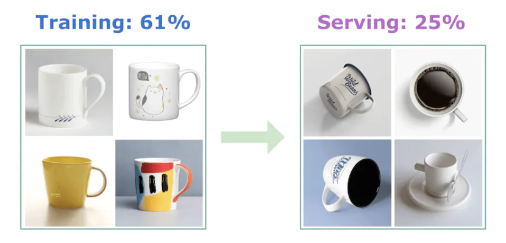

ML systems are much more than ML algorithms such as logistic regression or neural networks.ML systems are typically complex, consisting of a number of components, including: data stacks to manage data, serving infrastructure to make the system available to millions of users, an evaluation pipeline to measure the performance of the proposed system, and monitoring to ensure the model's performance doesn't degrade over time.
Figure 1:Components of a production-ready ML system
At an ML system design interview, you are expected to answer open-ended questions. There is no single correct answer.The interviewer wants to:evaluate your thought process, your in-depth understanding of various ML topics, your ability to design an end-to-end system, and your design choices based on the trade-offs of various options.To succeed in designing complex ML systems, it is very important to follow a framework.The framework consists of the following key steps:1. Clarifying requirements2. Framing the problem as an ML task3. Data preparation4. Model development5. Evaluation6. Deployment and serving7. Monitoring and infrastructure
1. Clarifying RequirementsML system design questions are usually intentionally vague, with the bare minimum of information. For example, an interview question could be: "design an event recommendation system". The first step is to ask clarifying questions. We should ask questions to understand the exact requirements. Here is a list of categorized questions to help us get started (Note: This list is not exhaustive):Business objective* If we are asked to create a system to recommend vacation rentals, two possible motivations are to increase the number of bookings and increase the revenue.Features the system needs to support* What are some of the features that the system is expected to support which could affect our ML system design? For example, lets assume were asked to design a video recommendation system. We might want to know if users can like or dislike recommended videos, as those interactions could be used to label training data.Data* What are the data sources? * How large is the dataset? * Is the data labeled?Constraints* How much computing power is available? * Is it a cloud-based system, or should the system work on a device? * Is the model expected to improve automatically over time?Scale of the system* How many users do we have? * How many items, such as videos, are we dealing with? * Whats the rate of growth of these metrics?Performance* How fast must prediction be? * Is a real-time solution expected? * Does accuracy have more priority or latency?Back To Top
2. Frame the Problem as an ML TaskEffective problem framing plays a critical role in solving ML problems. Suppose an interviewer asks you to increase the user engagement of a video streaming platform. Lack of user engagement is certainly a problem, but its not an ML task. So, we should frame it as an ML task in order to solve it. In reality, we should first determine whether or not ML is necessary for solving a given problem.In an ML system design interview, its safe to assume that ML is helpful. So, we can frame the problem as an ML task by doing the following:Defining the ML objectiveSpecifying the systems input and outputChoosing the right ML category2.1. Defining ML ObjectiveA business objective can be to increase sales by 20% or to improve user retention. But the objective may not be well defined, and we cannot train a model simply by telling it, increase sales by 20%. For an ML system to solve a task, we need to translate the business objective into a well-defined ML objective. A good ML objective is one that ML models can solve.Lets look at some examples as shown below. In later chapters, we will see more examples.
Figure 3:Translate the business objective to an ML objective
2.2. Specifying the systems input and outputFor example, for a harmful content detection system on a social media platform, the input is a post, and the output is whether this post is considered harmful or not.
Figure 4:Harmful content detection system input-output
In some cases, the system may consist of more than one ML model. If so, we need to specify the input and output of each ML model. For example, for harmful content detection, we may want to use one model to predict violence and another model to predict nudity. The system depends on these two models to determine if a post is harmful or not.Another important consideration is that there might be multiple ways to specify each models input-output. Figure 5 shows an example.
Figure 5:Different ways to specify the models input-output
2.3. Choosing the right ML categoryThere are many different ways to frame a problem as an ML task. Most problems can be framed as one of the ML categories (leaf nodes) shown in Figure 6.
Figure 6:Common ML categories
Talking points: Here are some topics we might want to talk about during an interview:What is a good ML objective?* How do different ML objectives compare? * What are the pros and cons?What are the inputs and outputs of the system, given the ML objective?If more than one model is involved in the ML system, what are the inputs and outputs of each model?Does the task need to be learned in a supervised or unsupervised way?Is it better to solve the problem using a regression or classification model? In the case of classification, is it binary or multiclass? In the case of regression, what is the output range?Back To Top
3. Data PreparationThis section aims to prepare high-quality inputs for ML models via two essential processes: Data engineering Feature engineering3.1. Data engineeringData engineering is the practice of designing and building pipelines for collecting, storing, retrieving, and processing data.3.1.1. Data sourcesAn ML system can work with data from many different sources. Knowing the data sources is a good way to answer many context questions, which may include:Who collected it? How clean is the data? Can the data source be trusted? Is the data user-generated or system generated?3.1.2. Data storageData storage, also called a database, is a repository for persistently storing and managing collections of data. Different databases are built to satisfy different use cases, so its important to understand at a high level how different databases work. You are usually not expected to know database internals during ML system design interviews.
Figure 7:Different types of databases
3.1.3. Extract, transform, and load (ETL)ETL consists of three phases:Extract This process extracts data from different data sources.Transform In this phase, data is often cleansed, mapped, and transformed into a specific format to meet operational needs.Load The transformed data is loaded into the target destination, which can be a file, a database, or a data warehouse [1].3.1.4. Data typesIn ML, data types differ from those in programming languages, such as int, float, string, etc. At the high level, data types can be broken down into two types: StructuredUnstructured
Figure 8:Data types in ML
Structured data follows a predefined data schema, whereas unstructured data does not. For example,* Dates, names, addresses, credit card numbers, and anything that can be represented in a tabular format with rows and columns, can be considered structured data. * Unstructured data refers to data with no underlying data schema, such as images, audio files, videos, and text.
Figure 9:Summary of structured and unstructured data
Understanding and clarifying whether the data is structured or unstructured helps us choose the appropriate ML model during the model development step.
Figure 10:Models for structured and unstructured data (source [2])
3.2. Feature EngineeringFeature engineering contains two processes:Using domain knowledge to select and extract predictive features from raw dataTransforming predictive features into a format usable by the model3.2.1. Feature engineering operationsIts quite common for some of the selected features to not be in a format the model can use.Feature engineering operations transform the selected features into a format the model can use. Techniques include:Handling missing values, Scaling values that have skewed distributions, and Encoding categorical features.The following list is not comprehensive, but it contains some of the most common operations for structured data.Handling missing values:DeletionImputationFeature Scaling:Normalization (min-max scaling): In this approach, the features are scaled, so all values are within the range [0,1] using the following formula z=x-xmin
xmax-xmin* NOTE Normalization does not change the distribution of the feature. In order to change the distribution of a feature to follow a standard distribution, standardization is used.* Standardization (Z-score normalization): Standardization is the process of changing the distribution of a feature to have a 0 mean and a standard deviation of 1. The following formula is used to standardize a feature z=x-
* is feature's mean and is the standard deviation.* Log scaling: To mitigate the skewness of a feature, a common technique called log scaling can be used, with the following formula z=log(x)* Log transformation can make data distribution less skewed, and enable the optimization algorithm to converge faster.* Discretization (Bucketing): Discretization is the process of converting a continuous feature into a categorical feature. * For example, instead of representing height as a continuous feature, we can divide heights into discrete buckets and represent each height by the bucket to which it belongs. * This allows the model to focus on learning only a few categories instead of attempting to learn an infinite number of possibilities.* Encoding categorical features: There are three common methods for converting categorical features into numeric representations: * Integer encoding* One-hot encoding * Embedding learningTalking points: Here are some topics we might want to discuss during the interview:Data availability and data collection:* What are the data sources? * What data is available to us, and how do we collect it? * How large is the data size? * How often do new data come in?Data storage:* Where is the data currently stored? * Is it on the cloud or on user devices? * Which data format is appropriate for storing the data? * How do we store multimodal data, e.g., a data point that might contain both images and texts?Feature engineering:* How do we process raw data into a form thats useful for the models? * What should we do about missing data? * Is feature engineering required for this task? * Which operations do we use to transform the raw data into a format usable by the ML model? * Do we need to normalize the features? * Which features should we construct from the raw data? * How do we plan to combine data of different types, such as texts, numbers, and images?Privacy:* How sensitive are the available data? * Are users concerned about the privacy of their data? * Is anonymization of user data necessary? * Is it possible to store users data on our servers, or is it only possible to access their data on their devices?Biases:* Are there any biases in the data? * If yes, what kinds of biases are present, and how do we correct them?Back To Top
4. Model DevelopmentModel development refers to the process of selecting an appropriate ML model and training it to solve the task at hand.4.1. Model SelectionIn practice, a typical process for selecting a model is to:Establish a simple baseline.* For example, in a video recommendation system, the baseline can be obtained by recommending the most popular videos.Experiment with simple models.* After we have a baseline, a good practice is to explore ML algorithms that are quick to train, such as logistic regression.Switch to more complex models.* If simple models cannot deliver satisfactory results, we can then consider more complex models, such as deep neural networks.Use an ensemble of models if we want more accurate predictions.* Using an ensemble of multiple models instead of only one may improve the quality of predictions. * Creating an ensemble can be accomplished in three ways: bagging [3]boosting [4]stacking [5]NOTE When examining different options, its good to briefly explain the algorithm and discuss the trade-offs. For example, logistic regression may be a good option for learning a linear task, but if the task is complex, we may need to choose a different model.NOTE When choosing an ML algorithm, its important to consider different aspects of a model. For example:The amount of data the model needs to train onTraining speedHyperparameters to choose and hyperparameter tuning techniquesPossibility of continual learningCompute requirements. A more complex model might deliver higher accuracy, but might require more computing power, such as a GPU instead of a CPUModels interpretability [6]. A more complex model can give better performance, but its results may be less interpretable.4.2. Model TrainingDuring this step, there are various topics you may want to discuss at an interview, such as:Constructing the datasetChoosing the loss functionTraining from scratch vs. fine-tuningDistributed training4.2.1. Constructing the datasetAt an interview, its usually a good idea to talk about constructing the dataset for model training and evaluation.
Figure 11:Dataset construction steps
All the steps except identify features and labels are generic operations, which can be applied to any ML system design task.Talking points: Some talking points are listed below:Model selection: Which ML models are suitable for the task, and what are their pros and cons. * Heres a list of topics to consider during model selection:The time it takes to trainThe amount of training data the model expectsThe computing resources the model may needLatency of the model at inference timeCan the model be deployed on a users device?Models interpretability. Making a model more complex may increase its performance, but the results might be harder to interpretCan we leverage continual training, or should we train from scratch?How many parameters does the model have? How much memory is needed?For neural networks, you might want to discuss typical architectures/blocks, such as ResNet or Transformer-based architectures. You can also discuss the choice of hyperparameters, such as the number of hidden layers, the number of neurons, activation functions, etc.Dataset labels:* How should we obtain the labels? * Is the data annotated, and if so, how good are the annotations? * If natural labels are available, how do we get them? * How do we receive user feedback on the system? * How long does it take to get natural labels?Model training:* What loss function should we choose?Cross-entropy [15], MSE [16], MAE [17], Huber loss [18], etc.* What regularization should we use?L1 [19], L2 [19], Entropy Regularization [20], K-fold CV [21], dropout [22])* What is backpropagation?* You may need to describe common optimization methods [23] such as: SGD [24], AdaGrad [25], Momentum [26],RMSProp [27].* What activation functions do we want to use and why?ELU [28], ReLU [29], Tanh [30], Sigmoid [31]* How to handle an imbalanced dataset?* What is the bias/variance trade-off?* What are the possible causes of overfitting and underfitting? How to address them?Continual learning: * Do we want to train the model online with each new data point? * Do we need to personalize the model to each user? * How often do we retrain the model? * Some models need to be retrained daily or weekly, and others monthly or yearly.Back To Top
5. EvaluationIn this section, we examine two evaluation methods, offline and online.5.1. Offline evaluationOffline evaluation refers to evaluating the performance of ML models during the model development phase. Figure 12 shows some of the commonly used metrics for different tasks.
Figure 12:Popular metrics in offline evaluation
During an interview, its important to identify suitable metrics for offline evaluation. This depends on the task at hand and how we have framed it. For example, if we try to solve a ranking problem, we might need to discuss ranking metrics and their trade-offs.5.2. Online evaluationOnline evaluation refers to the process of evaluating how the model performs in production after deployment.In practice, companies usually track many online metrics.Figure 13 shows various metrics for different problems.
Figure 13:Possible metrics in online evaluation
At an interview, we need to select some of the most important ones to measure the impact of the system. As opposed to offline metrics, choosing online metrics is subjective and depends upon product owners and business stakeholders.Talking points: Here are some talking points for the evaluation step:Online metrics:* Which metrics are important for measuring the effectiveness of the ML system online? * How do these metrics relate to the business objective?Offline metrics:* Which offline metrics are good at evaluating the models predictions during the development phase?Fairness and bias:* Does the model have the potential for bias across different attributes such as age, gender, race, etc.? * How would you fix this? * What happens if someone with malicious intent gets access to your system?Back To Top
6. Deployment and ServingSome important topics to cover include:Cloud vs. on-device deploymentModel compressionTesting in productionPrediction pipeline6.1. Cloud vs. on-device deploymentFigure 14 summarizes the main differences between on-device deployment and cloud deployment.
Figure 14:Trade-offs between cloud and on-device deploy
6.2. Model compressionModel compression refers to the process of making a model smaller.This is necessary to reduce the inference latency and model size.Three techniques are commonly used to compress models:Knowledge distillation:* The goal of knowledge distillation is to train a small model (student) to mimic a larger model (teacher).Pruning:* Pruning refers to the process of finding the least useful parameters and setting them to zero. * This leads to sparser models which can be stored more efficiently.Quantization:* Model parameters are often represented with 32-bit floating numbers. * In quantization, we use fewer bits to represent the parameters, which reduces the models size. Quantization can happen during training or post-training [39].6.3. Test in productionThe only way to ensure the model will perform well in production is to test it with real traffic. Commonly used techniques to test models include:Shadow deployment [40] A/B testing [42]Canary release [43] Interleaving experiments [44] Bandits [45]etc.6.3.1. Shadow deploymentIn this method, we deploy the new model in parallel with the existing model. Each incoming request is routed to both models, but only the existing model's prediction is served to the user.By shadow deploying the model, we minimize the risk of unreliable predictions until the newly developed model has been thoroughly tested. However, this is a costly approach that doubles the number of predictions.
Figure 15:Shadow deployment
6.3.2. A/B testingWith this method, we deploy the new model in parallel with the existing model. A portion of the traffic is routed to the newly developed model, while the remaining requests are routed to the existing model.In order to execute A/B testing correctly, there are two important factors to consider. 1. First, the traffic routed to each model has to be random. 2. Second, A/B tests should be run on a sufficient number of data points in order for the results to be legitimate.
Figure 16:A/B testing
6.3.3. Prediction pipelineAn important design decision to make is the choice between: Online prediction Batch predictionBatch predictionWith batch prediction, the model makes predictions periodically. Because predictions are pre-computed, we dont need to worry about how long it takes the model to generate predictions once they are pre-computed.Batch prediction has two major drawbacks. * First, the model becomes less responsive to the changing preferences of users. * Secondly, batch prediction is only possible if we know in advance what needs to be pre-computed. For example, in a language translation system, we are not able to make translations in advance as it entirely depends on the users input.
Figure 17:Batch prediction workflow
Online predictionIn online prediction, predictions are generated and returned as soon as requests arrive. The main problem with online prediction is that the model might take too long to generate predictions.
Figure 18:Online prediction workflow
This choice of batch prediction or online prediction is mainly driven by product requirements. Online prediction is generally preferred in situations where we do not know what needs to be computed in advance. Batch prediction is ideal when the system processes a high volume of data, and the results are not needed in real time.Figure 19 shows an example of the ML system design for a personalized news feed system. We will examine it in more depth in Chapter 10.
Figure 19:ML system design for a personalized news feed system
Talking pointsIs model compression needed? What are some commonly used compression techniques?Is online prediction or batch prediction more suitable? What are the trade-offs?Is real-time access to features possible? What are the challenges?How should we test the deployed model in production?An ML system consists of various components working together to serve requests. What are the responsibilities of each component in the proposed design?What technologies should we use to ensure that serving is fast and scalable?Back To Top
7. MonitoringMonitoring refers to the task of tracking, measuring, and logging different metrics. Two primary areas you may want to discuss are:Why a system fails in productionWhat to monitor7.1. Why a system fails in productionOne of the most common reasons is data distribution shift.Data distribution shift refers to the scenario in which the data a model encounters in production differs from that it encountered during training. Figure 20 shows an example where the training data comprised images of cups seen from the front view, but at serving time, an image of a cup at a different angle is passed to the ML model.

Figure 20:Data distribution shift
Data distribution in the real world constantly changes.In other words, the data used for training is likely to become less relevant as time passes. This leads to a stale model with deteriorating performance over time. Therefore, we should continuously monitor the system to detect this problem. Two common approaches for dealing with data distribution shifts are:Train on large datasets. A big enough training dataset enables the model to learn a comprehensive distribution, so any data points encountered in production likely come from this learned distribution.Regularly retrain the model using labeled data from the new distribution.7.2. What to monitorBroadly speaking, we can categorize monitoring techniques in ML systems into two buckets: Operation-relatedThose metrics ensure the system is up and running. They include:* Average serving times, * Throughput, * Number of prediction requests, * CPU/GPU utilization, * etc.ML-specific metrics* Monitoring inputs/outputsModels are only as good as the data they consume, so monitoring the models input and outputs is vital.* DriftsInputs to the system and the models outputs are monitored to detect changes in their underlying distribution.* Model accuracyFor example, we expect the accuracy to be within a specific range.* Model versionsMonitor which version of the model is deployed.Back To Top
8. InfrastructureInfrastructure is the foundation for training, deploying, and maintaining ML systems.In many ML interviews, you wont be asked infrastructure-related questions. However, some ML roles, such as DevOps and MLOps may require infrastructure knowledge. So, its important to be clear about the interviewers expectations for this topic.Infrastructure is a very broad subject and cannot be summarized in just a few lines. If youre interested in learning more about ML infrastructure, refer to [46][47][48].